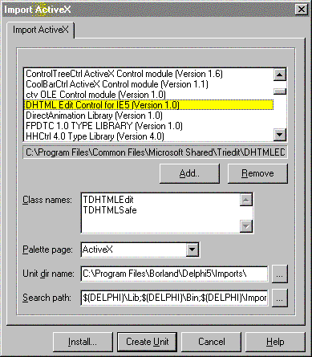
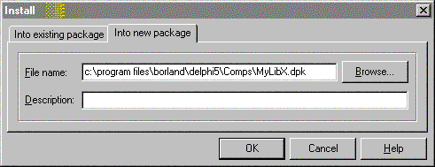
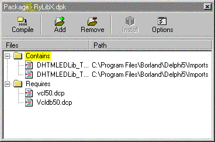

DRKB Explorer
HTMLEditor – Краткий обзор
01.01.2010
Вступление - загрузка информации.
Часто в своих проектах, там, где нужно дать возможность пользователю редактировать текст, выделять различными шрифтами (стилями, цветами...) отдельные слова и в других подобных случаях, мы используем, чаще всего, TRichEdit. Всем он нравится как редактор?, хорош и удобен он в работе? На эти вопросы каждый ответит по своему, но в принципе, худо-бедно, пользоваться им можно. Можно потому что не видно другой альтернативы. Вернее она есть, и на много удобнее и продвинутее чем Rich'формат - это Html'формат, но он не доступен для визуального редактирования - т.е. для него нет редактора, поддерживающего стили, картинки, таблицы()., вот и получается что оно как бы есть, но его как бы нет. А если бы был (здесь можно помечтать, что с помощью такого редактора можно было бы сделать)? А.если нечто подобное есть, а вы об этом не знаете (здесь можно состроить гримасу удивления и задаться вопросом "зачем такое делать и никому об этом не говорить?")? Короче, альтернатива Rich'формату есть это Html, теперь давайте попробуем найти для него редактор. Но чтобы что-то искать, надо, как минимум, знать что это что-то есть. Когда же я стал искать, то я еще не знал о существовании такого редактора, да вобщем-то и искал не его и обнаружение его - это побочный эффект любопытства.
Куда ты завел нас...?
Что и зачем я искал вам не интересно, а вот что и где я нашел мы сейчас узнаем.
| 1. | Запускаем один экземпляр Delphi (у меня 5-ая версия). |
| 2. | В меню-баре выбираем пункт "Component", затем "Import ActiveX Control". |
| 3. | В появившемся окне, в списке зарегестрированных ActiveX Control'ов находим строку "DHTML Edit Control..." и выделяем ее (я не обещаю что у всех она будет, но если вдруг не будет попробуйте нажать кнопку "Add" и найти файл "C:\Program Files\Common Files\Microsoft Shared\Triedit\DHTMLED.OCX").. |
Результат должен быть примерно следующий:

| 1. | Нажимаем кнопку "Install". |
| 2. | В следующем окне выбираем вкладку "Into new package". |
| 3. | Выбираем путь куда будет установлен наш ActiveX package и имя для него. |

| 2. | После долгого раздумья появится окно, в котором нажмите "Compile". |

| 1. | После чего в выскочившем сообщении нажмите "Ok". |
| 2. | Закройте все с сохранением вашей новой библиотеки. |
А теперь в два приема создаем проект и тестируем то что получилось.
| 2. | находим палитру компонент "ActiveX", где видим две новые иконки |
| 3. | выбираем ту что называется "DHTMLEdit" |
| 5. | устанавливаем Align := alClient |
| 7. | выделяем текст на странице которую вы сейчас читаете (Ctrl+A) и копируем с нее текст (Ctrl+C) |
| 9. | ставим в поле курсор (щелкните мышью по полю) |
Текст можно редактировать, выделять, подсвечивать (Ctrl+B, Ctrl+I, Ctrl+U), искать (Ctrl+F), и даже кажется печатать(Ctrl+P) (не уверен так как у меня нет принтера).
А что дальше?
А вот в этом-то вся шутка юмора и заключается... А я не знаю что дальше, точнее как програмно работать с ним - выделять, вставлять рисунки, рисовать таблицы и т.д. Судя по тому что все это он может отображать, он должен и уметь все это создавать, но с разбегу у меня не получилось разобраться. Поэтому, заинтересовавшийся народ, вот вам ребус - работа с html-едитором, взаимодействие его с программой и с пользователем - все это теперь ваша забота, а мы будем ждать появления на страницах "Королевства" от вас статей на этот счет, а я, пардон, отойду в сторону - у меня другие интересы и задачи, я лишь посчитал своим долгом познакомить вас со своей находкой. Единственное только знаю, что его можно использовать и как html-editor, и как html-viewer.
Заключение
Это полностью моя статья, ни на что не претендующая, ни с кого не требующая, ни от куда не списанная (даже упоминаний о DHTMLEdit'оре не где не слышал). Описанный контрол, технической поддержке со стороны автора статьи не подлежит, даже ответов на вопросы по нему не предусматривается. Все. Удачи. Всем пока.
Автор: Алексей Румянцев
Взято с http://delphiworld.narod.ru